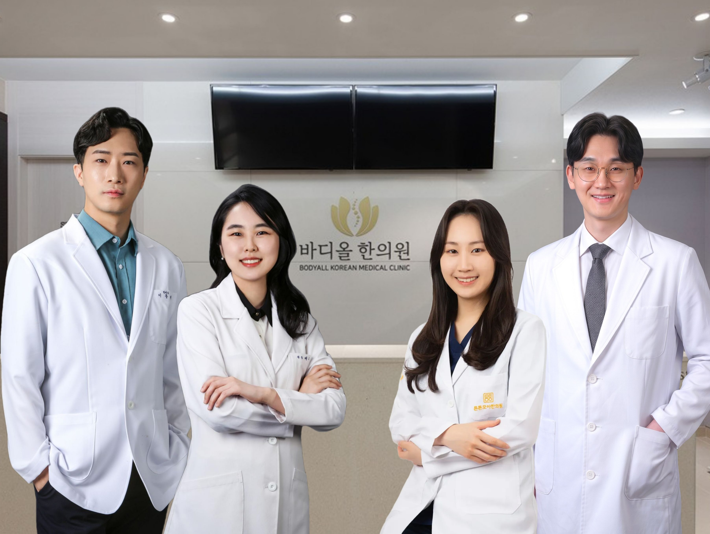

올바른 척추,
바디올한의원과 함께 하세요!

오늘 바디올한의원에서 치료 잘 받으셨나요?
상담 때 강조하여 말씀드렸듯이,
'성공적인 척추 교정치료'라는 것은,
진료실을 나서 집에 돌아가신 일상 속에서도 계속 진행되어야 합니다.
꼭 다음 가이드 글들을 정독해 주시면,
통증 없이건강한 척추로 회복하시는데 큰 도움이 되실 것입니다.
이미 교정을 받으신 분이시라면, 이 척추위생법들을 저희 원장단으로부터 자세히 배우셨겠지만,
이는 올바른 체형을 유지하기 위한 '반복적인 학습'이 매우 중요합니다.
각 파트는 단순한 동작 설명이 아닌, 우리 몸이 회복되는 원리와 함께 설명됩니다. 원리를 이해하시는 것이 척추 건강 지식을 완전한 내 것으로 만드는 지름길입니다.
궁금한 부분은, 언제든 의료진이나 바디올한의원으로 질문 주시면, 최대한 신속하게 답변드리도록 하겠습니다.
- 바디올한의원 원장단 일동